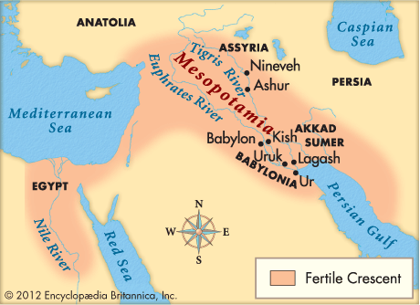
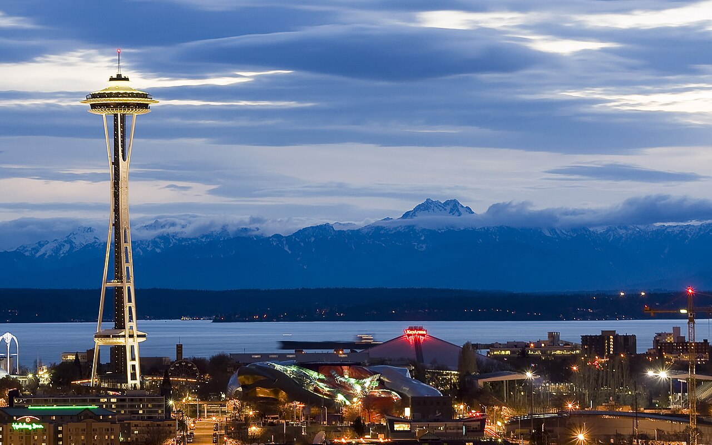

Fig. 1 A map of Ancient Mesopotamia
This will be the history of The Ziggurat. We are too lazy to populate this space with information, but be not deceived by its present lack!
The Ziggurat stands above all. The floodplains of the Tigris are its lands, and the denizens of Uruk are its people (you).

Fig. 2 A picture of Seattle from its Wikipedia page. Cool place!
Here lies more information on The Ziggurat. Read it someday, or buy a time machine and read it now.
More text blah blah blah!